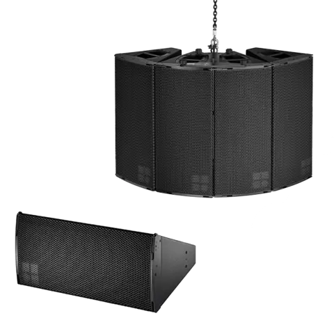
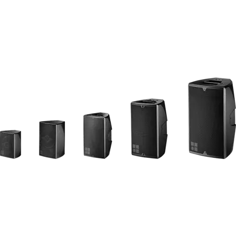
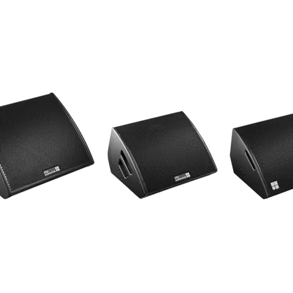
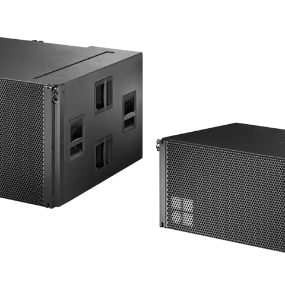

Products
-

A-Series. Key facts
- Augmented array loudspeakers for medium scale applications
- Variable splay angles adjust +/- 10°
- Acoustic optimization using Midrange Directivity Control or ArrayProcessing
-

E-Serise. Key fact
- Wide range of direct radiating, coaxial point source loudspeakers and subwoofers
- Patented, rotatable HF horns
- Flexible use for stand-alone, monitor or fill applications
-

Monitors. Key facts
- Wide selection of low profile, 2-way stage monitors
- High performance and controlled dispersion
- Can be driven passively or in 2-Way Active mode
-

SL-Series. Key facts
- Large format 4-way line array system
- Full bandwidth directivity control
applying cardioid technique for LF band
- Cardioid high efficiency subwoofer
- Combined Compression / Tension rigging
- Full touring package